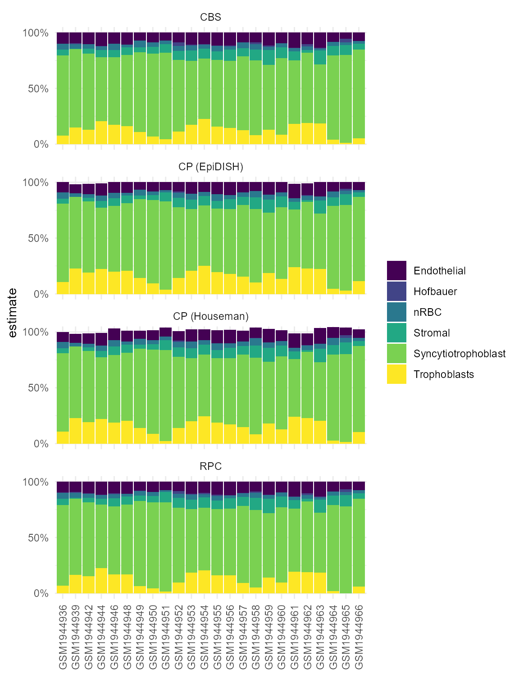

To infer cell composition on placental villi DNAm samples, we can use the reference cpgs identified in [3]. These are provided in this package as pl_cell_cpgs_third and pl_cell_cpgs_first for third trimester (term) and first trimester samples, respectively.
In this example we are using term villi DNAm data, so we first load the reference cpgs pl_cell_cpgs_third. This is a data frame of 600 cpgs, with mean methylation levels for each cell type.
# cell deconvolution packages
library(minfi)
library(EpiDISH)
# data wrangling and plotting
library(dplyr)
library(ggplot2)
library(tidyr)
library(viridis)
library(planet)
# load example data
data('pl_betas')
data('pl_cell_cpgs_third')
head(pl_cell_cpgs_third)## Trophoblasts Stromal Hofbauer Endothelial nRBC
## cg10590657 0.1014098 0.9345796 0.8655285 0.8963641 0.8448382
## cg14923398 0.1282030 0.8902107 0.9036769 0.9383641 0.9508709
## cg05348366 0.1305697 0.9519820 0.8803082 0.9065136 0.9278057
## cg17907628 0.1215249 0.9278777 0.8727841 0.8914412 0.9143601
## cg26799656 0.1259953 0.9482014 0.8803863 0.8791004 0.9010419
## cg11862144 0.1561991 0.9430855 0.9114967 0.9341671 0.9647331
## Syncytiotrophoblast
## cg10590657 0.05460441
## cg14923398 0.05383193
## cg05348366 0.06546727
## cg17907628 0.05325227
## cg26799656 0.06823985
## cg11862144 0.06044207After our reference cpg data is loaded, we can estimate cell composition by applying either the Constrained Projection approach implemented by the R packages minfi or EpiDISH, or a non-constrained approach by EpiDish.
houseman_estimates <- minfi:::projectCellType(
pl_betas[rownames(pl_cell_cpgs_third),],
pl_cell_cpgs_third,
lessThanOne = FALSE)
head(houseman_estimates)## Trophoblasts Stromal Hofbauer Endothelial nRBC
## GSM1944936 0.1091279 0.04891919 0.000000e+00 0.08983998 0.05294062
## GSM1944939 0.2299918 0.00000000 -1.806592e-19 0.07888007 0.03374149
## GSM1944942 0.1934287 0.03483540 0.000000e+00 0.09260353 0.02929310
## GSM1944944 0.2239896 0.06249135 1.608645e-03 0.11040693 0.04447951
## GSM1944946 0.1894152 0.07935955 0.000000e+00 0.10587439 0.05407587
## GSM1944948 0.2045124 0.07657717 0.000000e+00 0.09871149 0.02269798
## Syncytiotrophoblast
## GSM1944936 0.6979477
## GSM1944939 0.6377822
## GSM1944942 0.6350506
## GSM1944944 0.5467642
## GSM1944946 0.6022329
## GSM1944948 0.6085825
# robust partial correlations
epidish_RPC <- epidish(
beta.m = pl_betas[rownames(pl_cell_cpgs_third),],
ref.m = pl_cell_cpgs_third,
method = 'RPC')
# CIBERSORT
epidish_CBS <- epidish(
beta.m = pl_betas[rownames(pl_cell_cpgs_third),],
ref.m = pl_cell_cpgs_third,
method = 'CBS')
# constrained projection (houseman 2012)
epidish_CP <- epidish(
beta.m = pl_betas[rownames(pl_cell_cpgs_third),],
ref.m = pl_cell_cpgs_third,
method = 'CP')We can compare the different cell composition estimates.
bind_rows(houseman_estimates %>% as.data.frame %>% mutate(algorithm = 'CP (Houseman)'),
epidish_RPC$estF %>% as.data.frame %>% mutate(algorithm = 'RPC'),
epidish_CBS$estF %>% as.data.frame %>% mutate(algorithm = 'CBS'),
epidish_CP$estF %>% as.data.frame %>% mutate(algorithm = 'CP (EpiDISH)')) %>%
mutate(sample = rep(rownames(houseman_estimates),4)) %>%
as_tibble() %>%
pivot_longer(cols = -c(algorithm, sample),
names_to = 'component',
values_to = 'estimate') %>%
ggplot(aes(x = sample, y = estimate, fill = component)) +
geom_bar(stat = 'identity') +
facet_wrap(~algorithm, ncol = 1) +
scale_fill_viridis_d() +
theme_minimal() +
scale_y_continuous(limits = c(-0.1,1.1), breaks = c(0, 0.5, 1), labels = scales::percent) +
theme(axis.text.x = element_text(angle = 90, vjust = 0.5)) +
coord_cartesian(ylim = c(0,1)) +
labs(x = '', fill = '')